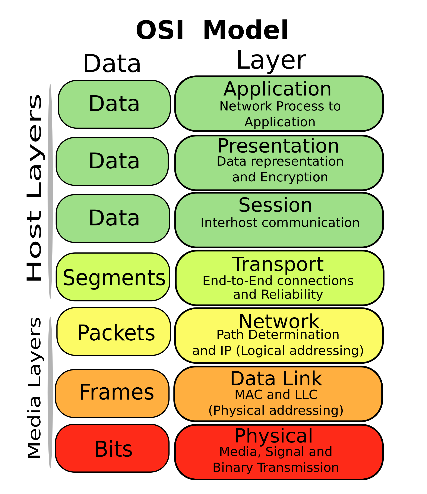
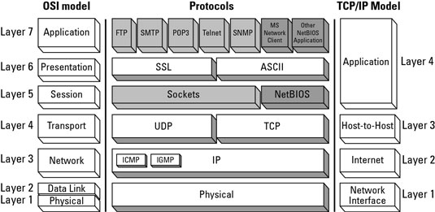
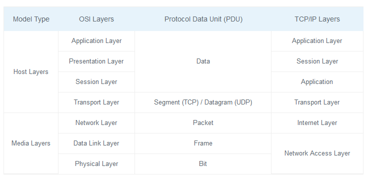
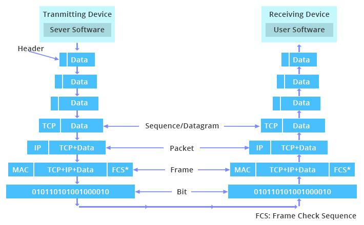

OSI ( Open System Interconnection Reference Model ) 概念模型
开放式系统互联模型（英语：Open System Interconnection Model，缩写：OSI；简称为OSI模型）是一种概念模型，由国际标准化组织提出，一个试图使各种计算机在世界范围内互连为网络的标准框架。定义于ISO/IEC 7498-1。
第7层 应用层
应用层（Application Layer）提供为应用软件而设的接口，以设置与另一应用软件之间的通信。例如: HTTP、HTTPS、FTP、TELNET、SSH、SMTP、POP3、HTML等。
第6层 表达层
表达层（Presentation Layer）把数据转换为能与接收者的系统格式兼容并适合传输的格式。
第5层 会话层
会话层（Session Layer）负责在数据传输中设置和维护计算机网络中两台计算机之间的通信连接。
第4层 传输层
传输层（Transport Layer）把传输表头（TH）加至数据以形成数据包。传输表头包含了所使用的协议等发送信息。例如:传输控制协议（TCP）等。
第3层 网络层
网络层（Network Layer）决定数据的路径选择和转寄，将网络表头（NH）加至数据包，以形成报文。网络表头包含了网络数据。例如:互联网协议（IP）等。
第2层 数据链接层（数据链路层）
数据链路层（Data Link Layer）负责网络寻址、错误侦测和改错。当表头和表尾被加至数据包时，会形成信息框（Data Frame）。数据链表头（DLH）是包含了物理地址和错误侦测及改错的方法。数据链表尾（DLT）是一串指示数据包末端的字符串。例如以太网、无线局域网（Wi-Fi）和通用分组无线服务（GPRS）等。
分为两个子层：逻辑链路控制（logical link control，LLC）子层和介质访问控制（Media access control，MAC）子层。
第1层 物理层
物理层（Physical Layer）在局部局域网上传送数据帧（Data Frame），它负责管理电脑通信设备和网络媒体之间的互通。包括了针脚、电压、线缆规范、集线器、中继器、网卡、主机接口卡等。

TCP-IP 模型

第4层 应用层
（如 BGP 和 RIP 这样的路由协议，尽管由于各种各样的原因它们分别运行在 TCP 和 UDP 上，仍然可以将它们看作网络层的一部分）
第3层 传输层
例如TCP、UDP、RTP、SCTP
（如OSPF这样的路由协议，尽管运行在IP上也可以看作是网络层的一部分）
第2层 网络互连层
对于TCP/IP来说这是因特网协议（IP）
（如 ICMP和 IGMP 这样的必须协议尽管运行在 IP 上，也仍然可以看作是网络互连层的一部分；ARP不运行在IP上）
第1层 网络访问(链接)层
分层：
好处：良好的封装，可扩展性，互不影响。
网络互连层 ipv4 -> ipv6 进展缓慢，应用层飞速发展。
坏处：数据延迟。

报文头部
